Section 3.1: Measures of Center
Learning Objectives
1.Describe and calculate the arithmetic mean from data.
2.Describe and calculate the median from data.
3.Interpret the mean and median as sensitive and resistant.
4.Describe the mode from data.
5.Explain the best measure of center with respect to the shape of the distribution.
A measure of center, or measure of central tendency, is a number that gives the sense of what is typical in the population. For example, you might want to know the typical starting salary for nurses in California. Or you might want to estimate the typical number of calories in a fast-food meal. Or you might want to describe the average student at your college or employee at your work. You can answer these questions by collecting data and identifying the most common or typical observation.
How we interpret what it means to be typical is how we arrive at three different measures of center. You may already be familiar with them, they are the mean, median, and mode. The first, the arithmetic mean, is probably most familiar. Arithmetic mean is the formal name for the average that you have likely used.
But before we begin looking at measures of center, we need to recall the difference between populations and samples. Recall that a parameter is a measure of all individuals in a population. A statistic is a measurement that is taken from sample data. A sample, you will recall, is a subset of the population. Typically, we use the measurements from the sample (the statistic) to estimate the measure of the population (the parameter). In this chapter it will be extremely important that we identify whether we are dealing with a population or a sample because the notations and sometimes even the formulas we use will be different. The following definition was presented in section 1.1.
Definition 1
Parameter – A number that is calculated from population data. This is the true value for the population and does not vary. We usually use Greek letters to represent parameters.
Statistic – A number calculated from sample data. This is more easily obtainable than a population parameter but varies with each sample. It is used to estimate the true value of the population parameter. We usually use Roman letters (the usual English alphabet) to represent statistics.
The Mean
The arithmetic mean is the proper name for what we usually call the mean, often used synonymously with the word average. In your classes, when you add up your test scores and divide by the total you are computing your average. Now you know it has a fancier name. It also has two formulas, depending on whether you are dealing with population data or sample data.
Definition 2
Population Mean: Given data values , , , ..., from a population of size N, then the population mean is given by
The symbol is pronounced “mew.” The symbol is a capital sigma. It stands for summation. So, stands for “the sum of all the data values.”
Definition 3
Sample Mean: Given data values , , , ..., from a sample of size n, then the sample mean is given by
The symbol is pronounced “x-bar.” The value of the sample mean is used to approximate the value of the population mean .
These formulas look complicated, but you already know how to use them in practice.
Example 1: The Arithmetic Mean
The data in Table 1 give the scores of 5 students on a recent exam. Treat the group as a population and find the population mean. Does the mean do a good job representing a typical score on the exam?
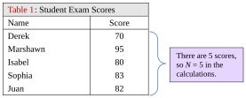
Table 1: Student Exam Scores | |
|---|---|
Name | Score |
Derek | 70 |
Marshawn | 95 |
Isabel | 80 |
Sophia | 83 |
Juan | 82 |
Solution:The population mean is calculated as follows:
So, the mean, or typical value for this data set is 82. That suggests that the “average grade” on this exam was an 82. As you look at the data, there were three scores right around the mean, the 80, 82, and 83. There was one score that was higher, and one that was lower. In this sense, the mean is doing a good job of finding the center of the data. If we look at the dot plot of the data in figure 3.2, we can see that the value 82 is right in the middle.
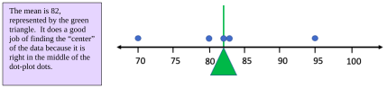
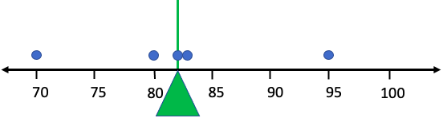
Figure 3.2: Dot plot for data in Table 1.
Example 2: The Arithmetic Mean
For this example, we add two students to the data who did not take the exam with the rest of the students listed in Table 1. One student took a makeup exam and did not score well. Another never took the makeup exam and received a score of zero. Their scores have been updated in Table 2. Repeat example 1 to find the population mean. How have these two additional scores affected the mean? Does the mean still do a good job finding the center?
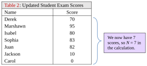
Table 2: Updated Student Exam Scores | |
|---|---|
Name | Score |
Derek | 70 |
Marshawn | 95 |
Isabel | 80 |
Sophia | 83 |
Juan | 82 |
Jackson | 10 |
Carol | 0 |
Solution:The population mean is now:
As we see, the mean grade has been calculated to be 60. That is a considerable drop from the original mean that was 82 in example 1. The population mean 82 was typical of the first 5 scores in the data set, but does the number 60 represent a typical score for the 7 students on this test? Checking the data, we note there were no scores close to 60. Look at the dot plot for the data in figure 3.3. Do you think the mean value of 60 is typical of the data?
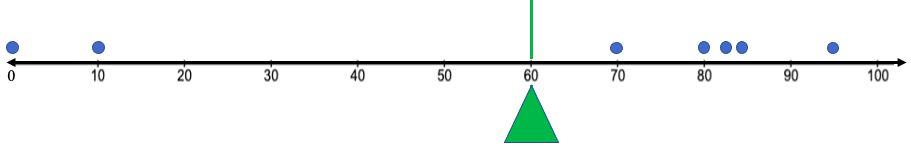
Figure 3.3: Dot plot for data in Tables 2. Does the mean still represent a typical value?
From the dot plot, it appears that the mean is in the middle, as it should be, but it doesn’t represent the typical observation anymore. Over half of the scores were 80 or higher, and most were 70 or higher. The typical grade letter grade was a B, and no exam score was near 60. Figure 3.4 shows how the inclusion of the extremely low data values caused the mean to drop in such a way that it no longer represents a typical score on the exam.
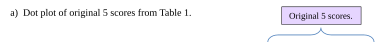
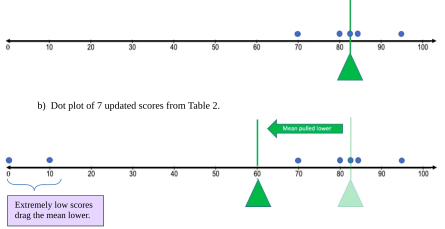
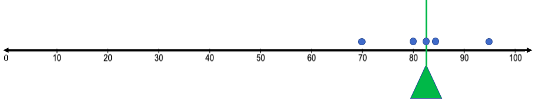
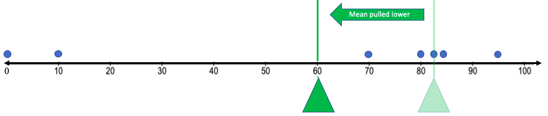
Figure 3.4: The addition of the extremely low observations drags the mean away from the center.
Example 2 shows that the mean is sensitive to extreme observations, meaning that observations that are far from the rest will pull the mean in their direction. That makes the mean an unreliable measurement in the cases where there are extremely high or extremely low data values. In the example you can see that the scores of 0 and 10 dragged the mean so much lower that it failed to be a good measure of a typical exam score.

Important Point!
The mean is sensitive to extreme observations. If there are extreme values among the data, the mean will be pulled in their direction. For this reason, the mean is not a good measure of center when there are extreme values present in the data.
This happens because the value of every observation is included in the calculation of the arithmetic mean. Every data value carries weight in the computation, so every data value has influence over the value of the mean. As a result, even one or two extreme values can ruin the mean’s ability to measure the center of the data. In the cases where we have extreme values, we need another way to look at what it means to be typical. That’s where the median comes into play.
The Median
A second way to identify a typical value is to arrange the data in order, from smallest to largest, then find the value or values that are right in the middle of the list. This is called finding the median. Like the mean, the formulas can be confusing, but the idea is straight-forward.
Definition 4
The Median of a set of data is the value that is in the middle when the data are arranged in ascending order (smallest to largest). There is no universally agreed upon symbol for the median, so we will use a capital M to represent it. Approximately half the data are smaller or lower than the median, while approximately half are larger or higher than the median. See figure 3.5.
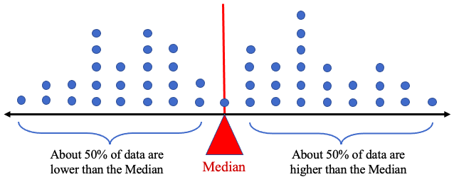
Figure 3.5: The median divides the data into two groups, with about half the data above and half below.
Example 3: Finding the Median
Find the median exam score for the students listed in Table 1 and compare it to the mean. Which of the mean or median does a better job at representing the center of the data? Repeat the process for the exam scores in Table 2.
Table 1: Student Exam Scores | |
|---|---|
Name | Score |
Derek | 70 |
Marshawn | 95 |
Isabel | 80 |
Sophia | 83 |
Juan | 82 |
Table 2: Updated Student Exam Scores | |
|---|---|
Name | Score |
Derek | 70 |
Marshawn | 95 |
Isabel | 80 |
Sophia | 83 |
Juan | 82 |
Jackson | 10 |
Carol | 0 |
Solution:For the data in Table 1, we first need to arrange the data in ascending order.
70, 80, 82, 83, 95
Next, we find the value that is in the middle, or at the halfway point.
We can see that the score 82 is in the middle, so 82 is the median, M = 82. The mean for the data in Table 1 was also . Since the mean and median agree, we would consider both to be reliable measures of the center of the data.
Next, let’s look at the data in Table 2. Again, we first arrange the data in ascending order.
0,10,70,80,82,83,95
Looking for the middle, we find that 80 has three scores lower and three scores higher. So, the median is M = 80. The mean of this data set was . In the case of the second data set, the median does a much better job of identifying the center of the data. See figure 3.6. The red triangle represents the median in the illustration. Notice that it is closer to more of the data than the green triangle representing the mean. When the data have extreme observations, the median does a better job of identifying the typical observations.
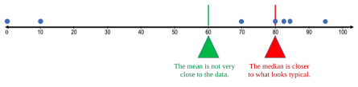
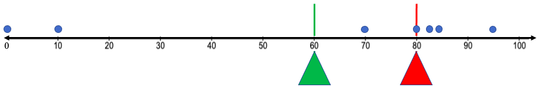
Figure 3.6: The mean and median on the dot plot for Table 2 data.
In the last example, the presence of the extremely low scores did not affect the median as much as the mean. The median dropped from 82 to 80, still representing the typical values reasonably well, while the mean became unreliable. This is generally true when there are extreme observations. We have already noted that the mean is sensitive to extreme observations, and now we see that the median is resistant to extreme observations.
Important Point!
The median is resistant to extreme observations, meaning it is not greatly affected by extreme data values. For this reason, the median is a better measure of center when there are extreme values in the data.
The reason why the median is resistant to extreme observations is that it does not include each data value in the computation. It only includes the order, or rank, of the data from smallest to largest, not the actual values. Consider how the mean and median would be affected if the professor had input a typo on the highest score as 195 instead of 95 as it was in Table 1.
Original (correct) data, arranged in ascending order:
Data with typo, arranged in ascending order:
The change in the last data entry did not affect the median, but it did affect the mean. The median doesn’t care how large the largest score is, only that it was the largest. The median treats 95 and 195 the same as simply “the highest score”. The mean, however, is influenced by the values of the 95 and 195. When the mean is calculated including the typo, it is dramatically changed. Again, we emphasize that the mean is sensitive to extreme observations, while the median is resistant to them.
Finding the median is not difficult if you have a small and odd-numbered set of data, like in the last examples. But what do you do if there is not one value in the middle? What if the data set has an even number, or thousands of observations? It’s not always easy to spot the middle value in a data set. Consider example 4.
Example 4: Finding the Median of an Even Set of Data
Find the median of a student’s quiz scores, {14, 11, 19, 16, 10, 19}.
Solution:Step one, as before, is to arrange the data in ascending order.
101114161919
Here, there is no observation in the middle. There are two observations lower than 14, and three that are higher. So, 14 is not in the middle, and so it is not the median.
What about the data value 16? It isn’t in the middle either.
The problem is that we have an even number of observations in the data. When this happens, the median is the mean (the average) of the two observations that are in the middle. In this case, the two observations in the middle are 14 and 16. The median is .
The process outlined above is important if you are trying to find the median by looking at a data set that has an even number of observations. The first thing you will need to know is whether the data set has an odd or even number of observations.
Recall!
The odd numbers are {1, 3, 5, 7, 9, 11, 13, 15, ...} and the even numbers are {2, 4, 6, 8, 10, 12, 14, ...}
How to Find the Median from a Set of Data
1.Arrange the data in ascending order. We use n for number of observations, whether from a sample or a population.
2.Determine the number of observations there are in the set, n.
a.If n is odd, the median is the number in the middle, found at location in the list.
b.If n is even, the median is the average of the two observations in the middle, found at locations and .
Be careful! The formulas above tell you WHERE to find the median in the arranged list of data but are not themselves the median.
Example 5: Finding the Location of the Median of Even and Odd Data Sets
a)Find the median of the student exam scores in Table 1.
b)Find the median of a student’s quiz scores, {14, 11, 19, 16, 10, 19}.
Solution:(a)The exam scores from Table 1 are {70, 95, 80, 83, 82}
Step 1:Put the data in ascending order.
7080828395
Step 2:There are N = 5 (we use n = 5 in the formula) observations. The number 5 is odd. The locator formula gives the location of the median at
So, the third item in the list is the median. That is, the median is 82. This agrees with the answer we found in example 1.
(b)The quiz scores are {14,11,19,16,10,19}
Step 1:Put the data in ascending order.
101114161919
Step 2:There are n = 6 observations. The number 6 is even. The locator formula gives the location of the median at
averaged with the item at location
So, the median will be the average of the third item in the list with the fourth item.
Again, the median is
which is the value that is exactly between the third and fourth observations. This is precisely what we calculated in example 4.
STATBELT Utility- Finding the Mean and Median
Open STATBELT Utility- the Statistical Basics Exploratory Learning Tool (opens in a new tab), and type or paste the data into one column. Type a name for the column in its heading.
1.Select Descriptive Statistics → Basic Statistics.
2.Under “Columns to include,” check the column with the data.
3.For a broad summary, leave “Statistics to show” as it is and click “Show results in a new window.”
4.If you do not want a broad summary, click “Select none,” then check only the statistics you want before you click “Show results in a new window.”
Example 6: Finding the Mean and Median Using STATBELT Utility
A student counted the number of telemarketer (spam) calls she got each day for the first 24 days of the month. She looked at her phone records and wrote down the number of spam calls she received each day. The data she collected is in Table 3. Find the mean and median of the number of spam calls she gets per day.
Table 3: Number of Spam Phone Calls | |||
|---|---|---|---|
2 | 1 | 1 | 0 |
3 | 2 | 4 | 4 |
1 | 3 | 6 | 2 |
2 | 1 | 1 | 7 |
2 | 6 | 4 | 5 |
5 | 7 | 5 | 1 |
Solution:We can calculate the mean and median by hand.
There are n = 24 observations. First, we calculate the sample mean.
The student received 3.125 spam calls per day, on average (usually, we will round this off to 3.1). To find the median, we need to arrange the data in order from smallest to largest. That can be complicated when the data set is large. (It is preferable to use technology to sort large amounts of data!)
011111122222334445556677
Since the data set is even with n = 24, the median will be the average of the 12th and 13th observation in the list.
So, the median is
That means that she gets fewer than 2.5 spam calls per day half the time, and more than 2.5 spam calls per day half the time.
Using STATBELT Utility, first type the data into an empty column and name it “Spam Calls.” Then, we follow Descriptive Statistics → Basic Statistics, and check “Spam Calls” under “Columns to include.”
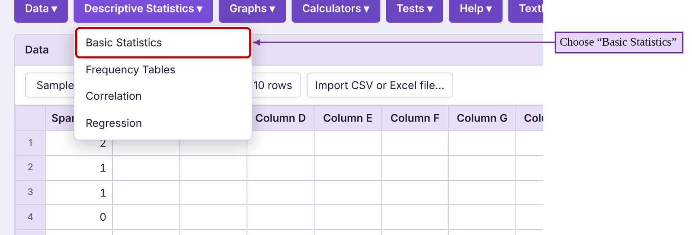
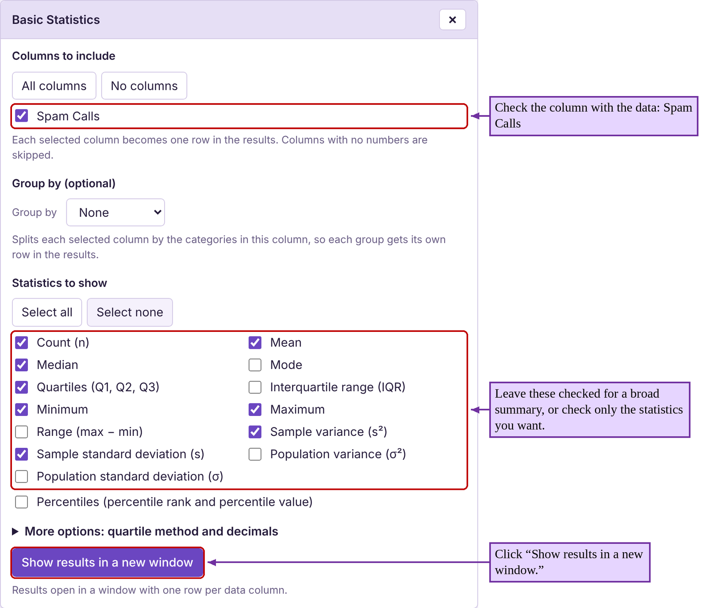
The STATBELT Utility output gives more information than we need. But you can see the mean and median are two of the summary statistics that are provided. You can also see the number of observations, n, is given. The other statistics will be discussed later as we progress through chapter 3.
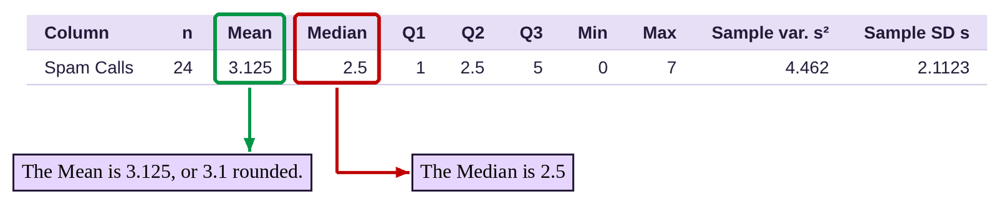
So, it appears that she typically gets around 2 or 3 spam calls per day, perhaps more. We can say this with some certainty because the mean and median are close together. To determine which of the mean or median is a better measure of center in this situation, we need to consider the shape of the distribution. But first, there is one more measure of center to consider.
Important Point!
When we calculate the mean, we will round our results to one decimal place more than the original data. For example, if the data are whole numbers, we should round the mean to one decimal place. If the data are rounded to one decimal place, we should round the mean to two decimal places.
The Mode
Definition 5
The Mode of a set of data is the value that occurs most often. That is, the mode has the highest frequency among the data. If two values have the same highest frequency, there are two modes, and we say the data are bimodal. If more than two values have the same highest frequency, we say the data are multimodal. If no data value repeats, we say there is no mode. We do not use a symbol for the mode.
Example 7: Finding the Mode
Find the mode for the number of spam calls in Table 3.
Table 3: Number of Spam Phone Calls | |||
|---|---|---|---|
2 | 1 | 1 | 0 |
3 | 2 | 4 | 4 |
1 | 3 | 6 | 2 |
2 | 1 | 1 | 7 |
2 | 6 | 4 | 5 |
5 | 7 | 5 | 1 |
Solution:In example 1 in section 2.2 we created the frequency table for the number of spam calls distribution.
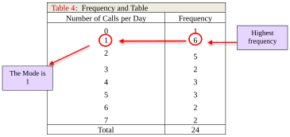
Table 4: Frequency and Table | |
|---|---|
Number of Calls per Day | Frequency |
0 | 1 |
1 | 6 |
2 | 5 |
3 | 2 |
4 | 3 |
5 | 3 |
6 | 2 |
7 | 2 |
Total | 24 |
Since the number of calls with the highest frequency was 1 call per day, which occurred 6 times, the mode number of spam calls is 1.
Now we have seen three methods to determine a “center” or “typical” observation in the data. Which one is the best to use? That depends on the type of data and the distribution.
The Shape of the Distribution and Measures of Center
Figure 3.7 shows the dot plot for spam phone calls along with the three measures of center that we have computed. The mode is 1 (represented with a blue triangle), the median is 2.5 (represented with a red triangle), and the mean is 3.1 (represented with a green triangle). Which of these is the best representative of what is typical?
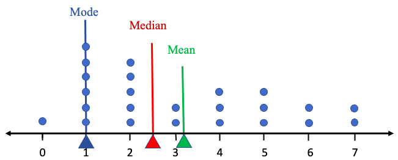
Figure 3.7: The mean, median, and mode shown on the dot plot for Table 3 data.
The mode is the value on the x-axis that corresponds to the “highest peak” of the dot plot. Even though it is the most common observation, the mode = 1 does not look to be in the “center” of the data. It seems very far to the left side of the distribution with almost all the observations larger than 1. Further, it appears that the data are skewed to the right as there are extreme observations of 6 and 7 on the far-right side. Because the mean is sensitive to the extremes, it is pulled to the right by them, perhaps too far to the right. The median is resistant to the extremes, and it is further to the right than the mode. The median looks to be the most “in the middle of the data” of the three measures.
Mode = 1 is too low.
Mean = 3.1 is probably a little too high because the distribution is skewed.
Median = 2.5 looks to be just right.
If this sounds like Goldilocks and the Three Bears to you, you are correct. The median plays the role of Baby Bear in this story. When data are skewed, the median is just right.
The relationship we see above is the usual pattern for data distributions that are skewed to the right. In fact, if data are skewed in either direction, we will use the median as the best measure of center.
Important Point!
When data are skewed, we use the median to measure the center of the data distribution. This is because the median is resistant to extreme observations, so it is not greatly affected by the skew.
What if the data are not skewed? How will the mean, median, and mode compare?
Example 8: Comparing Mean, Median, and Mode
In section 2.2, example 5, we used the data for the ages of United States Presidents at inauguration. Table 5 contains the data. The raw data in a column can be copied and pasted into STATBELT Utility by opening the presidents’ ages data file (opens in a new tab), or you can choose “U.S. Presidents Age at Inauguration” from the “Sample Data” menu above the data table. Find the mean, median, and mode. Compare the three measures on a histogram of the data distribution.

Photo by Sandra Grünewald (opens in a new tab) on Unsplash (opens in a new tab)
Table 5: Ages of Presidents at Inauguration | |||||
|---|---|---|---|---|---|
57 | 68 | 56 | 54 | 60 | 64 |
61 | 51 | 46 | 42 | 61 | 46 |
57 | 49 | 54 | 51 | 43 | 54 |
57 | 64 | 49 | 56 | 55 | 47 |
58 | 50 | 51 | 55 | 56 | 70 |
57 | 48 | 47 | 51 | 61 | 78 |
61 | 65 | 55 | 54 | 52 | |
54 | 52 | 55 | 51 | 69 | |
Solution:First copy or type the data into STATBELT Utility, or load the sample data. Then, select Descriptive Statistics → Basic Statistics and check “Age at inauguration” under “Columns to include.” Under “Statistics to show,” click “Select none,” then check Mean, Median, and Mode. Click “Show results in a new window.”
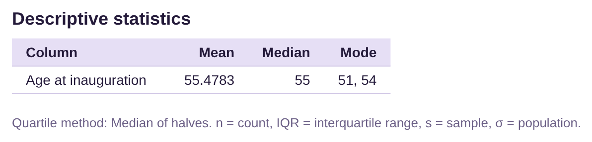
The mean is 55.5 when rounded to one decimal place. The median is 55. That means that about half of the ages are lower than 55, and about half are higher. STATBELT Utility lists two modes, 51 and 54. Looking back at the data in Table 5 we see that the data is bimodal since each of 51 and 54 appear 5 times. Figure 3.8 shows the histogram we made by hand in section 2.2 with the three measures of center added. All three measures of center are close together. See figure 3.8.
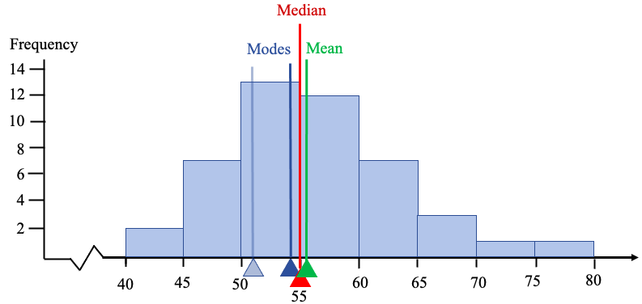
Figure 3.8: The mean, median, and mode shown on the histogram for table 5 data.
The tallest bar of the histogram represents the class 50-54. Both modes are in that class (the mode at 51 is shown faded). The mode at 54 is very close to the median at 55 and the mean at 55.5. This histogram is bell-shaped with a very slight skew. The slight skew causes the mean to be slightly larger than the median, but not by much. The mean, median, and mode are consistently near 55, so the best measure of the typical age is around 55 years.
In general, when data are bell-shaped, the mean, median, and mode will be close together. When we have a choice, we will choose to use the mean. This is also true when data are uniform, and in fact for any symmetric distribution. Symmetric means that the distribution is the same on each side, like a mirror image. When that happens, any extreme values on the left are balanced by extreme values on the right, and the mean remains in the middle. Although there is nothing wrong with the median, we prefer to use the mean whenever possible, because most of the advanced procedures we will see later in the class will involve the mean. We can simply do more interesting analysis using the mean that we can using the median, at least for now.
Important Point!
When data are symmetric, specifically bell-shaped or uniform, we use the mean to measure the center of the data distribution.
Figure 3.9 shows how the measures of center are positioned in relation to the shape of the distribution. For instance, if the data are skewed left, the mean is less than the median. If it is skewed right, the mean is larger than the median. If it is bell-shaped, they should be roughly equal.
Skewed Left | Bell-shaped (or any symmetric distribution) | Skewed Right |
|---|---|---|
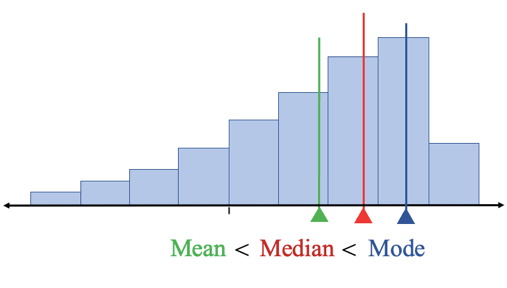 | 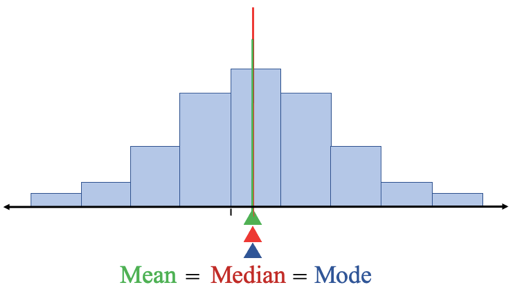 | 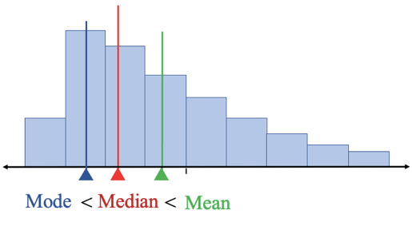 |
Figure 3.9: The mean, median, and mode in relation to the shape of the data distribution.
 Tip!
Tip!Some students remember that “the mean chases its tail”. If the distribution is skewed to the left, the tail is on the left, and so the mean chases it in that direction. If the distribution is skewed to the right, the mean will chase its tail to the right. If the distribution is not skewed, there is no tail to chase, so it stays in the middle.
Which of the Measures of Center is Best?
Now we will summarize the three measures, and when they are best used.
As we have seen, when data are skewed, the median does the best job at describing what is typical. If the data are bell-shaped, we prefer to use the mean. The only time we use the mode is when we want to describe the most typical observation from qualitative data. When we are dealing with qualitative data, there are no numbers in which to add to compute a mean, nor to arrange from smallest to largest to find a median. Mean and median are only useful for quantitative data. As a result, the mode is the only option for qualitative data. See figure 3.10.
Figure 3.10: Flowchart for deciding which measure of center to use.
Example 9: Which measure of Mean, Median, and Mode is best?
Table 6 contains data first used in example 1 of section 2.1. Participants were asked to record their favorite pizza. What is the best measure of center to use for this data?
Table 6: Favorite Pizza | ||||
|---|---|---|---|---|
Pepperoni | Cheese | Pepperoni | Other | Veggie |
Pepperoni | Veggie | Pepperoni | Other | Other |
Cheese | Pepperoni | Hawaiian | Cheese | Other |
Veggie | Other | Other | Veggie | Hawaiian |
Pepperoni | Veggie | Hawaiian | Pepperoni | Other |
Hawaiian | Pepperoni | Pepperoni | Pepperoni | Pepperoni |
Other | Cheese | Hawaiian | Other | Veggie |
Cheese | Hawaiian | Other | Pepperoni | Hawaiian |
Solution:Since the data is qualitative, you cannot find a mean or median. The only option is to find use mode. In this case, pepperoni was the category selected with the highest frequency (12 times), so the mode is pepperoni. We would say that the most typical pizza selected was pepperoni.
Example 10: Which measure of Mean, Median, and Mode is best?
The price of homes in the United States are known to be skewed. Do you think home prices are skewed left or skewed right? What is the best measure of center for home prices? Which is larger in this case, the mean or median?
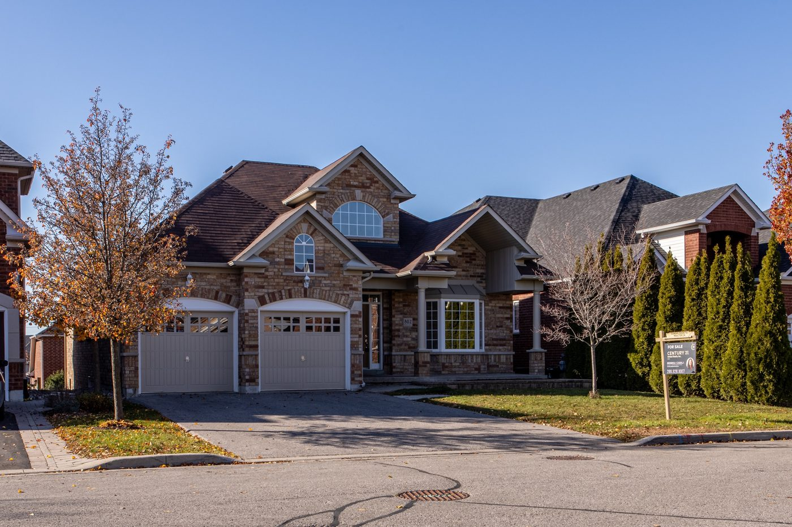
Photo by Dillon Kydd (opens in a new tab) on Unsplash (opens in a new tab)
Solution:Supply and demand tells us that there are more lower to moderately priced homes sold each year than there are expensive ones. But there can be extremely expensive homes, in the multiple millions of dollars, that are purchased by the few that are very wealthy. That means that the frequency for lower to moderately priced homes is high, while the frequency for very expensive homes is smaller, and smaller still for the most expensive homes.
Thus, homes are skewed to the right. As a result, the median is the best measure of center for home prices. Since the data are skewed right, the mean is also pulled to the right, and so it is larger than the median (see figure 3.9). In fact, when you hear about home prices in the news, they always report the median price, meaning that approximately 50% of all home sales are lower, and 50% are higher than the median price they give. Now you know why they don’t tell you the average price (which would be even higher and likely discourage many first-time home buyers).
Example 11: Which measure of Mean, Median, and Mode is best?
Table 7 lists the average poverty rates in the United States (previously given in example 6 in section 2.2) sorted from lowest to highest. You can copy the poverty rate data (opens in a new tab), or choose “U.S. Poverty Rates by State (and DC)” from STATBELT Utility’s “Sample Data” menu.
Make a histogram for the data. What is the best measure of center for poverty rates? Which is larger, the mean or median? Use STATBELT Utility to find the mean and median to confirm your suspicions.
Table 7: Percent of Population of States Living in Poverty 2016-2018 (sorted) | ||||||||
|---|---|---|---|---|---|---|---|---|
6.4 | 9.2 | 9.9 | 10.7 | 11.4 | 12.2 | 13.6 | 14.7 | 18.7 |
7.1 | 9.5 | 10.3 | 10.8 | 11.5 | 12.2 | 13.7 | 14.9 | 19.8 |
7.9 | 9.5 | 10.3 | 10.9 | 11.8 | 12.5 | 14.0 | 15.3 | 19.8 |
8.7 | 9.6 | 10.4 | 10.9 | 11.8 | 12.6 | 14.1 | 15.5 | |
8.9 | 9.6 | 10.4 | 11.0 | 11.8 | 12.6 | 14.1 | 16.0 | |
9.1 | 9.8 | 10.6 | 11.3 | 11.9 | 12.8 | 14.4 | 17.2 | |
Solution:In example 6, section 2.2, we used STATBELT Utility to make the histogram shown in figure 3.11. First, we copied the data into a new column. Next, we selected Graphs → Histogram and chose the average poverty column for “Column.” We unchecked “Choose start and bin width automatically,” typed 5 for “Start at” and 2.5 for “Bin width,” and selected “Relative frequency” for “Bar height.” Then we clicked “Open graph in a new window.” The histogram appears to be close to bell shaped, with possibly a very slight skew to the right. Since it is bell-shaped, we would use the mean rather than use the median to best represent a typical average poverty rate. But because of the slight skew, we would expect the mean to be very slightly larger than the median.

Figure 3.11: Histogram for average poverty rates in the US, looks bell-shaped.
To compute the mean and median, we select Descriptive Statistics → Basic Statistics, then check the column under “Columns to include.” Then click “Show results in a new window.” This gives us more than we need, but the mean and median are easy to locate in the output table.
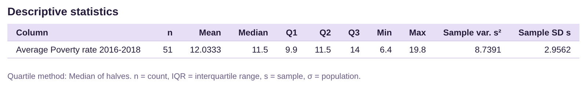
The mean is 12.03%, rounded to two decimal places (the original data was given to one decimal place), and the median is 11.5%. As expected, the mean is a little bit higher than the median due to the slight skew. By and large, the two values are very close due to the bell-shape of the distribution.
Recall that the goal of this chapter is to be able to describe the data we collect in terms of shape, center, and dispersion. We can now describe shape and center. Dispersion, or spread of the data, will be discussed in section 3.2.
Example 12: Describe the Distributions in terms of Shape and Center
Figure 3.12 gives STATBELT Utility output from a data set of 228 high school students who later attended college. The data set collected each participant’s high school grade point average and college grade point average. The left-side box gives the histogram, mean, and median for the high school students’ grade point averages, while the right-side box gives the histogram, mean, and median for the same students’ college grade point averages. Describe each distribution in terms of its shape and center. How do high school and college grade point averages differ?
High School GPA | College GPA |
|---|---|
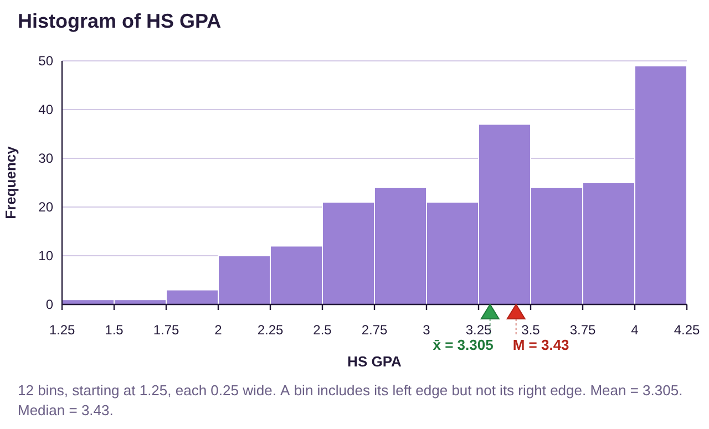 Mean Median M = 3.43 | 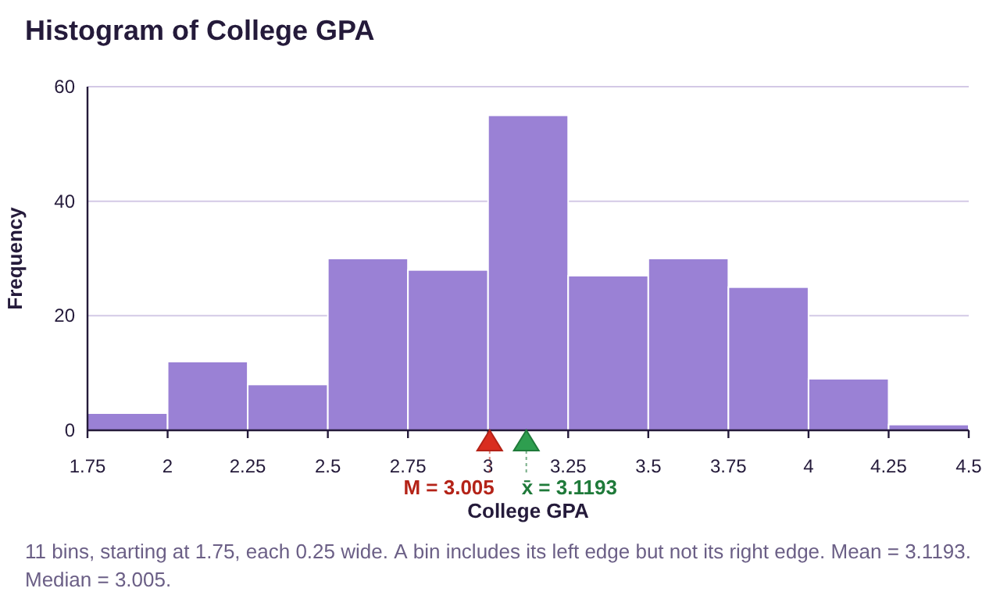 Mean Median M = 3.01 |
Figure 3.12: Histograms, mean, and median for high school GPA and college GPA.
Solution:High School Grade Point Average: This distribution is skewed to the left. Since it is skewed, the median, M = 3.43, is the best representative for the center. Approximately half of high school students had a GPA below 3.43, and about half had a GPA that was above 3.43. The mean is lower than the median, as you can see in figure 3.12.
College Grade Point Average: This distribution appears to be bell-shaped. As such, the mean is the better measure of center. The average college student has a grade point average of 3.12. The median is reasonably close to the mean because the data are close to bell-shaped.
The shape of the distributions suggests that there are many high school students who earn a 4.0 grade point average, but not as many earn a 4.0 at college. The average high school student had a mean GPA that was 0.19 grade points higher than their college GPA because 3.31 – 3.12 = 0.19. The difference in the medians was 0.42, or about half of a grade. So, the average high school student can expect a slight drop in their grade point average as they transition to college. Of course, that describes the general trend, and individuals will have varying results.
Photo by John Schnobrich (opens in a new tab) on Unsplash (opens in a new tab)